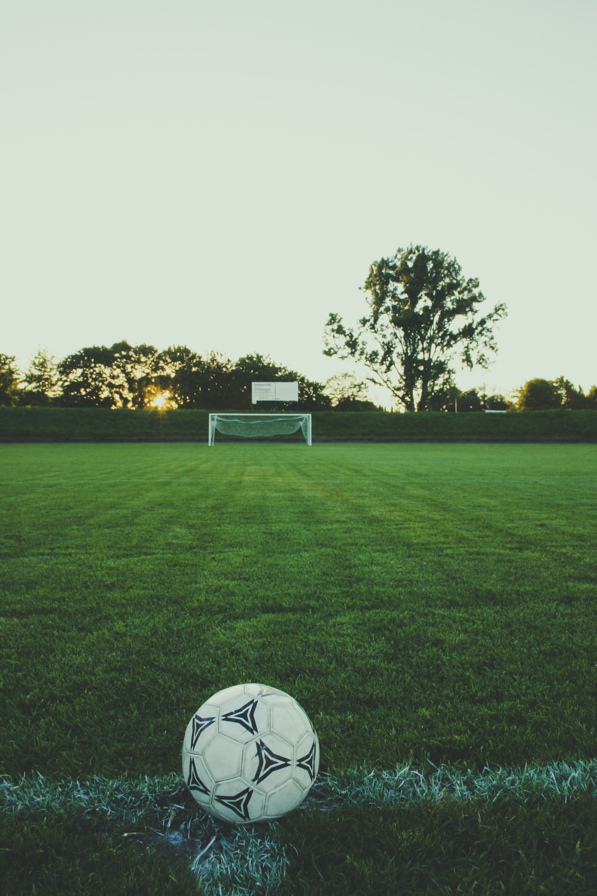

Mbappé’den İlk Gol ve Kupa Sözleri: “İnanılmaz Bir His”
İlk Golün Coşkusu
Mbappé, maçta attığı ilk golün ardından büyük bir mutluluk yaşadığını belirtti. Golün, hem kendisi hem de takım arkadaşları için anlamlı bir an olduğunu ifade eden Mbappé, “Bu golü atmak gerçekten inanılmaz bir his. Bu tür anlar, futbolun neden bu kadar özel bir spor olduğunu bize hatırlatıyor. Özellikle büyük bir maçı kazandıktan sonra bu golün gelmesi, bizi daha da motive etti” dedi.
Gelecek İçin Umut
Mbappé, başarılarının sadece bir başlangıç olduğuna inandığını belirtti. “Bu tür galibiyetler, bize gelecekte daha büyük hedefler koyma cesareti veriyor. Her zaman daha iyisini başarmak için çalışacağız ve bu motivasyonla yola devam edeceğiz” dedi.
Türkiye - Çin Voleybol Çeyrek Final Maçı: Tarih, Saat ve Yayın Bilgileri

-
Maçın Tarihi ve Saati
Türkiye ile Çin arasındaki voleybol çeyrek final maçı, [Tarih] tarihinde gerçekleşecek. Maç, [Saat]'te başlayacak. Bu kritik karşılaşma, her iki takım için de büyük bir öneme sahip ve voleybol tutkunları tarafından büyük bir ilgiyle izlenecek.
-
Maçın Önemi
Türkiye ve Çin arasındaki bu çeyrek final maçı, turnuvanın en heyecan verici karşılaşmalarından biri olarak öne çıkıyor. İki güçlü takımın mücadelesi, voleybol dünyasında büyük bir yankı uyandıracak ve her iki ülkenin sporseverleri tarafından ilgiyle izlenecek.
Wimbledon’da Türk Hakem Mutlu Yücebaş Görev Aldı
-
Wimbledon'da Önemli Bir Görev
Dünyanın en prestijli tenis turnuvalarından biri olan Wimbledon'da, Türk hakem Mutlu Yücebaş, turnuvanın hakem kadrosunda yer aldı. Bu, Yücebaş’ın uluslararası tenis arenasındaki yetkinliğini ve başarısını bir kez daha kanıtlayan önemli bir adım oldu. Wimbledon’da görev almak, hakemler için büyük bir onur ve profesyonel başarı olarak kabul ediliyor.
-
Hakemlik Kariyerinde Önemli Bir Adım
Mutlu Yücebaş, hakemlik kariyerinde birçok ulusal ve uluslararası turnuvada görev almış bir isim olarak tanınıyor. Wimbledon’daki bu görev, Yücebaş’ın tenis hakemliği alanındaki yetkinliğinin ve uluslararası düzeydeki tanınmasının bir göstergesi. Yücebaş’ın Wimbledon’daki görevini başarıyla tamamlaması, Türk tenis hakemliği için de büyük bir prestij kaynağı olarak değerlendiriliyor.